Dafür lernst du
Was du mitnehmen sollst.
- Halte gebundene Töne über Schläge und Taktgrenzen hinweg.
- Verstehe Punktierungen und zähle die verlängerten Notenwerte genau.
- Erkenne Akzentzeichen, ohne den Grundpuls zu verlieren.
- Verbinde diese Mittel in lesbaren und hörbaren Rhythmen.
Vier Kapitel durch den Kurs
Dein geplanter Lernweg.
Kapitel 01HaltebögenGeplant
Ein Haltebogen verbindet gleiche Tonhöhen. Der Ton klingt über den nächsten Puls oder Taktstrich hinweg weiter, ohne erneut angeschlagen zu werden.
- Haltebögen von Phrasierungsbögen unterscheiden.
- Notenwerte über Schläge und Taktgrenzen zusammenzählen.
- Gebundene Töne gleichmäßig halten.
Die konkreten Lektionen und Materialien folgen.
Kapitel öffnenKapitel 02Punktierte NotenGeplant
Der Punkt verlängert einen Notenwert um die Bälfte. Im Mittelpunkt stehen punktierte Viertel mit Achteln und punktierte Achtel mit Sechzehnteln.
- Notenwerte mit und ohne Punkt vergleichen.
- Die verlängerte Dauer zählen und spielen.
- Punktierte Rhythmen lesen und hören.
Die konkreten Lektionen und Materialien folgen.
Kapitel öffnenKapitel 03AkzentzeichenGeplant
Lerne das Akzentzeichen kennen und übe, Noten an unterschiedlichen Zählpositionen hörbar hervorzuheben, während der Puls gleichmäßig weiterläuft.
- Akzentzeichen auf Viertel-, Achtel- und Sechzehntelpositionen lesen.
- Hervorgehobene Noten hören und mit der Notation vergleichen.
- Gleichmäßigen Fußpuls und verschobene Betonung verbinden.
Die konkreten Lektionen und Materialien folgen.
Kapitel öffnenKapitel 04Besondere Mittel verbindenGeplant
Verbinde Punktierungen, Haltebögen und Akzente in bekannten Taktarten und Unterteilungen.
- Gemischte Rhythmen lesen und spielen.
- Gehörte Figuren mit der Notation vergleichen.
- Eigene Rhythmen schreiben und den Puls überprüfen.
Die konkreten Lektionen und Materialien folgen.
Kapitel öffnenEinblick in die Aufgabenformate
So wirst du üben.
Lesen und spielen
Lies eine rhythmische Figur, zähle mit und übertrage sie auf Klatschen oder dein Instrument.
AufgabenentwurfHören und notieren
Vergleiche eine gehörte Figur mit der Notation und finde den Unterschied.
AufgabenentwurfEigenen Rhythmus schreiben
Verbinde die neu gelernten Mittel in einem vollständigen Takt.
AufgabenentwurfDas sind geplante Aufgabenformate. Konkrete Übungen, Aufnahmen und Lösungen sind noch nicht verfügbar.
Teil einer gemeinsamen Schule
Was diesen Kurs verbindet.
Empfohlene Grundlagen
Diese Kurse helfen dir beim Einstieg:
Rhythmus 2 · Sechzehntelnoten ↗Rhythmus 3 · Triolen ↗Vorschlag für den Lernweg; noch keine verbindliche Zugangsvoraussetzung.
Du kannst passende Themen aus anderen Bereichen parallel vertiefen. Wiederhole Grundlagen dort, wo du sie für deine Musik brauchst.
Direktzugriff
Alle vier Kapitel öffnen.
Kapitel 01 · Direkt im Kurs
Haltebögen
Besondere rhythmische Mittel verstehen, zählen und musikalisch anwenden.
Lektion 01
Einführung.
Ein Haltebogen verbindet zwei Noten gleicher Tonhöhe. Er kann Noten innerhalb eines Takts oder über einen Taktstrich hinweg verbinden. Ihre Dauern werden zusammengezählt; die zweite Note wird nicht erneut angeschlagen. Der Ton klingt ohne neuen Einsatz weiter.
Das lernst du.
Du erkennst Haltebögen, addierst die verbundenen Notenwerte und hältst den Ton ohne neuen Einsatz weiter.
Beim Klatschen: Lass deine Bände nach dem Klatschen zusammen, bis die Note vorbei ist. Beim Singen oder Spielen eines Instruments kannst du den Ton einfach weiterhalten. Beim Klatschen ist es wichtig, die Bände bis zum Ende der Note zusammenzulassen.
Ein Beispiel im 4/4-Takt.
Auf Schlag 1 beginnt eine Viertelnote. Sie wird mit einem Bindebogen an die gleich hohe Achtelnote auf Schlag 2 gebunden. Das nächste Achtel erklingt auf „2-und“. Auf Schlag 3 beginnt eine halbe Note, die bis zum Taktende klingt.
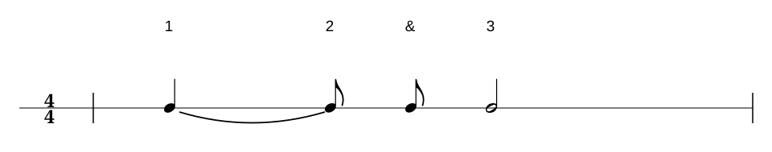
Ein Beispiel über zwei Takte.
Beide Takte füllen genau vier Schläge. Im ersten Takt stehen eine Viertelnote, zwei Achtel, vier Sechzehntel und die gebundene Viertelnote auf Schlag 4. Diese klingt über den Taktstrich hinweg bis Schlag 1 des zweiten Takts weiter. Danach folgen eine Achteltriole auf Schlag 2 und eine halbe Note auf den Schlägen 3 und 4.
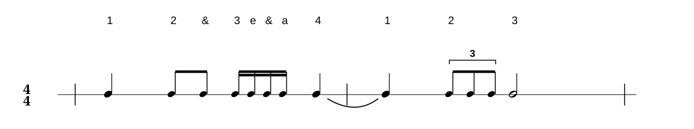
Lektion 02
Lesen
Lies jeden Takt gleichmäßig im 4/4-Puls. Bei einem Haltebogen klingt die erste Note ohne neuen Anschlag weiter. Zähle trotzdem alle vier Schläge mit.
Leseübung 1 · Haltebogen im Takt
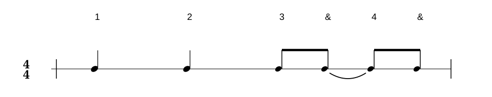
Leseübung 2 · Über den Taktstrich
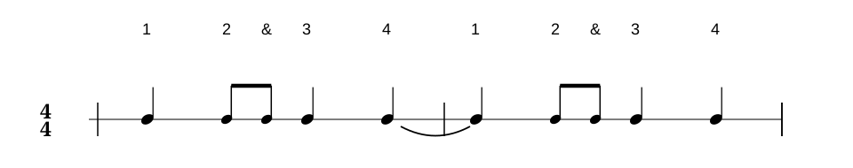
Leseübung 3 · Gemischte Notenwerte
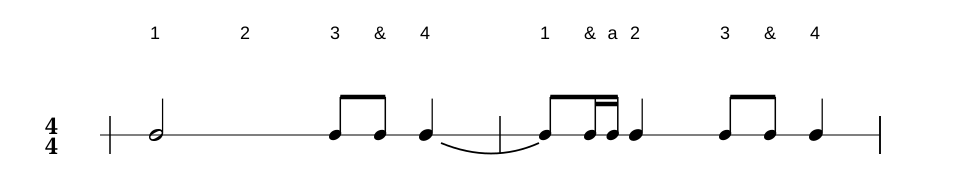
Lektion 03
Hören
Höre den Rhythmus und notiere ihn. Achte darauf, wann ein Ton ohne neuen Anschlag weiterklingt. Öffne die Lösung erst danach.
Höraufgabe 1
Lösung zu Höraufgabe 1 anzeigen
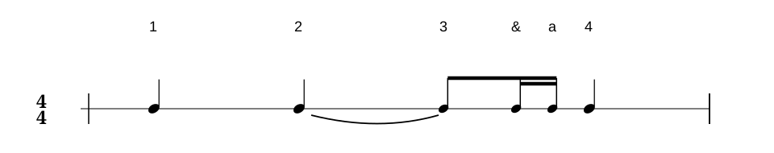
Höraufgabe 2
Lösung zu Höraufgabe 2 anzeigen
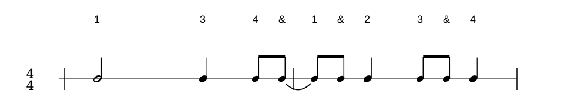
Höraufgabe 3
Lösung zu Höraufgabe 3 anzeigen
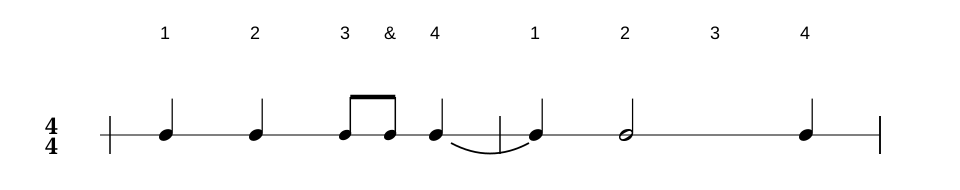
Lektion 04
Fehler finden
Vergleiche die Aufnahme mit der Notation. Achte darauf, wie lange die Töne klingen und ob sie ohne neuen Anschlag weitergeführt werden.
Fehler finden 1
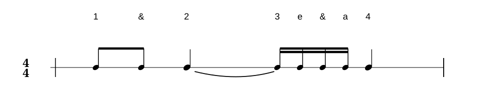
Lösungshilfe
Auf Schlag 4 ist eine Viertelnote notiert, in der Aufnahme sind jedoch zwei Achtelnoten zu hören.
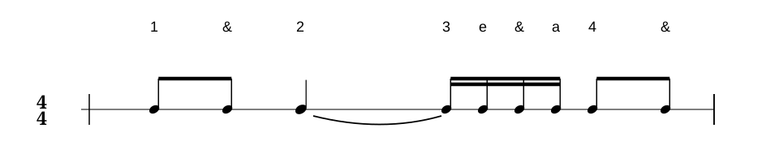
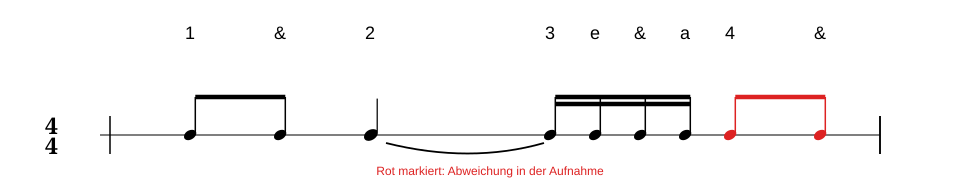
Fehler finden 2
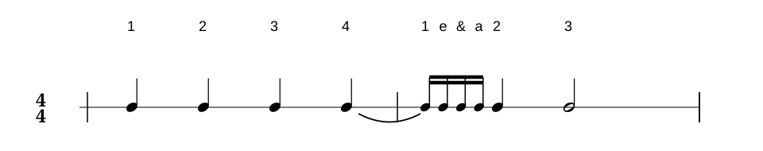
Lösungshilfe
Der Haltebogen zur Sechzehntelnote zeigt, dass der Ton erst auf dem „e“ von Schlag 1 neu gespielt wird. In der Aufnahme endet der Haltebogen jedoch bereits auf einer Achtelnote; deshalb wird erst auf dem „&“ wieder angeschlagen.
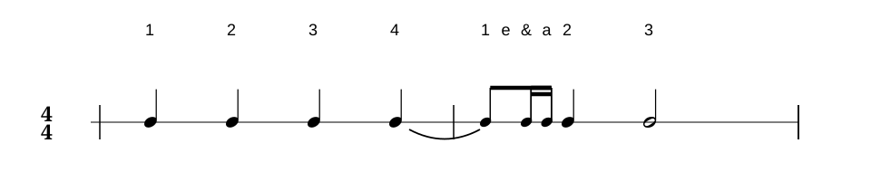
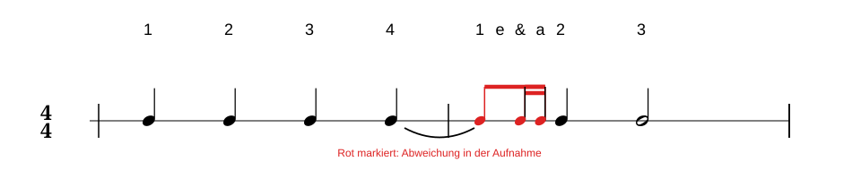
Fehler finden 3
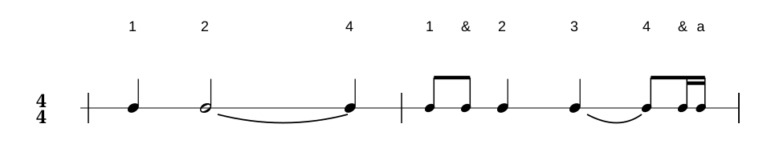
Lösungshilfe
Der zweite notierte Haltebogen zwischen Schlag 3 und Schlag 4 in Takt 2 ist in der Aufnahme nicht zu hören. Stattdessen wird die Achtelnote auf Schlag 4 direkt neu angeschlagen.
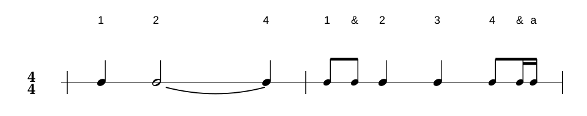
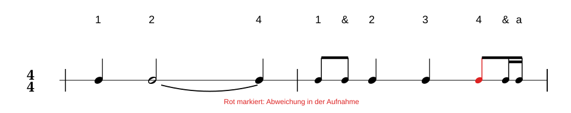
Lektion 05
Haltebögen selber setzen
Übung 1 · Zwei eigene Takte
Setze aus den bekannten Notenwerten und Pausen zwei eigene Rhythmen zusammen. Füge Zeichen an beliebigen Einfügestellen hinzu oder entferne sie wieder. Jeder Takt darf höchstens vier Schläge umfassen. Anschließend kannst du Haltebögen zwischen benachbarte Noten setzen, auch über den Taktstrich hinweg.